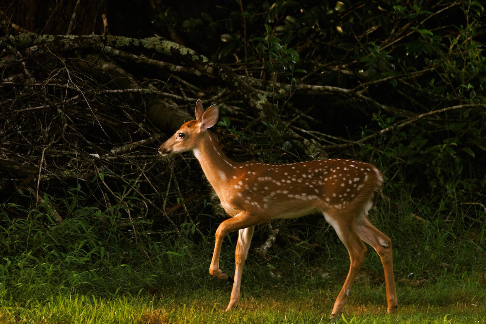
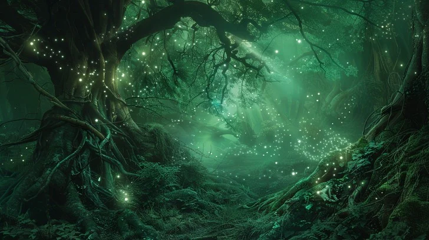

This magical and mythical forest has welcomed a young doe. It is able to explore the beauty and illuminating world that is mother nature.
The innocent creature has become welcomed and begins to explore this ginormous world.
The mythical forest has so many different friend and creatures wating around every corner; offering new experiences for those to explore.

